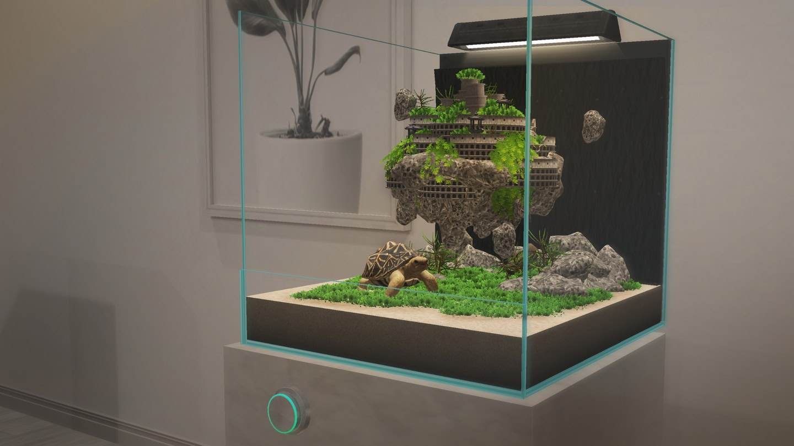
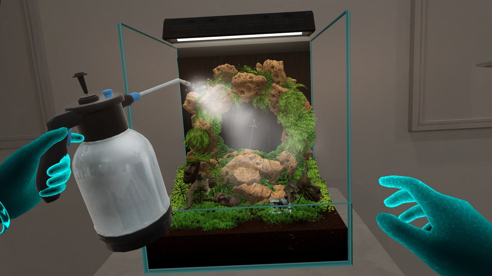
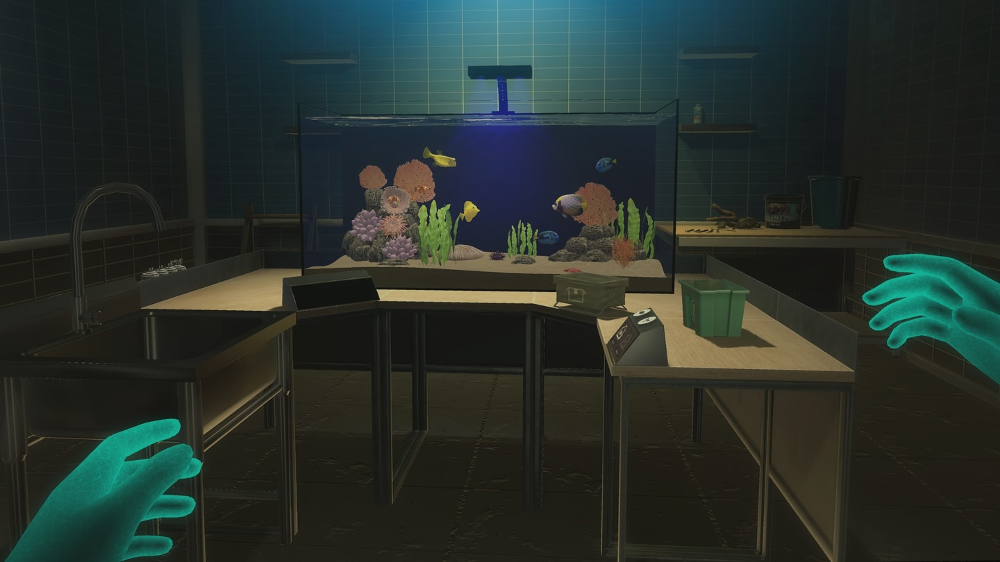
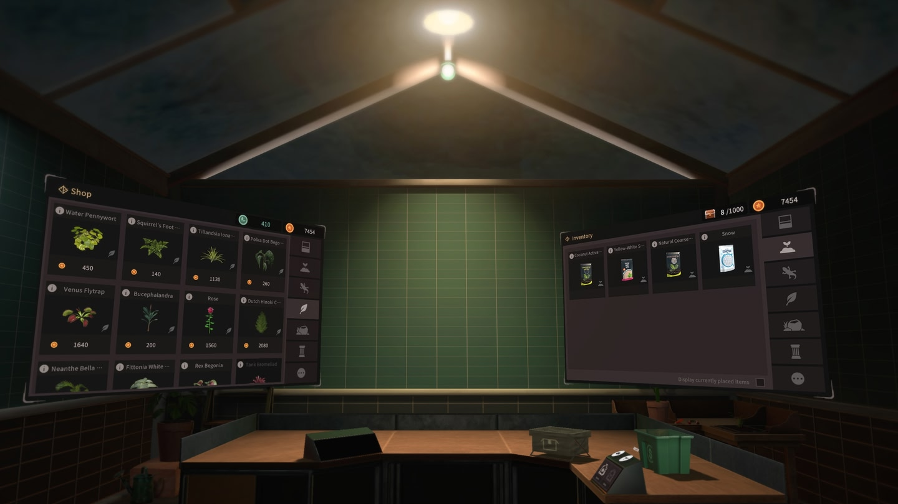
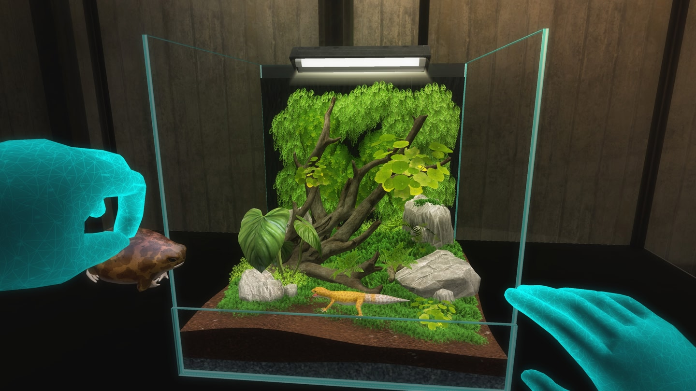
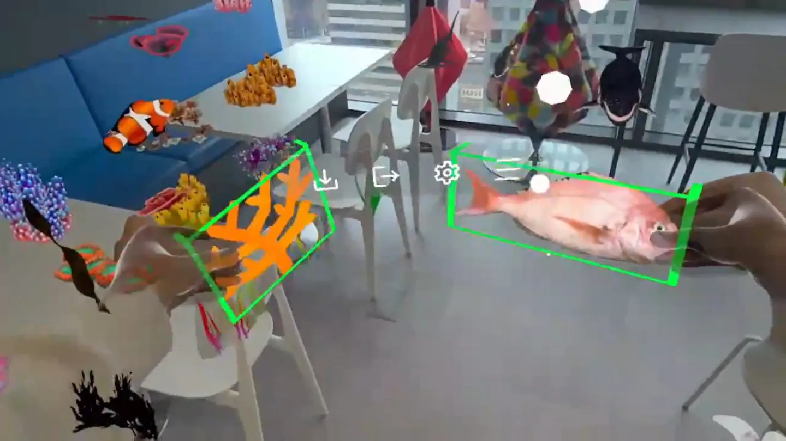
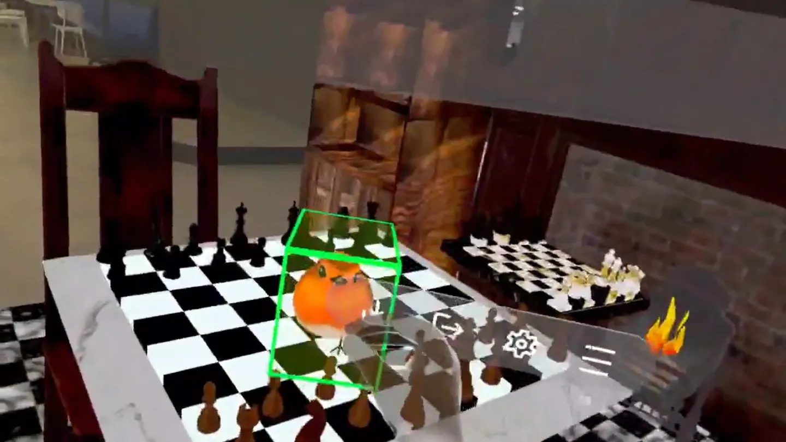
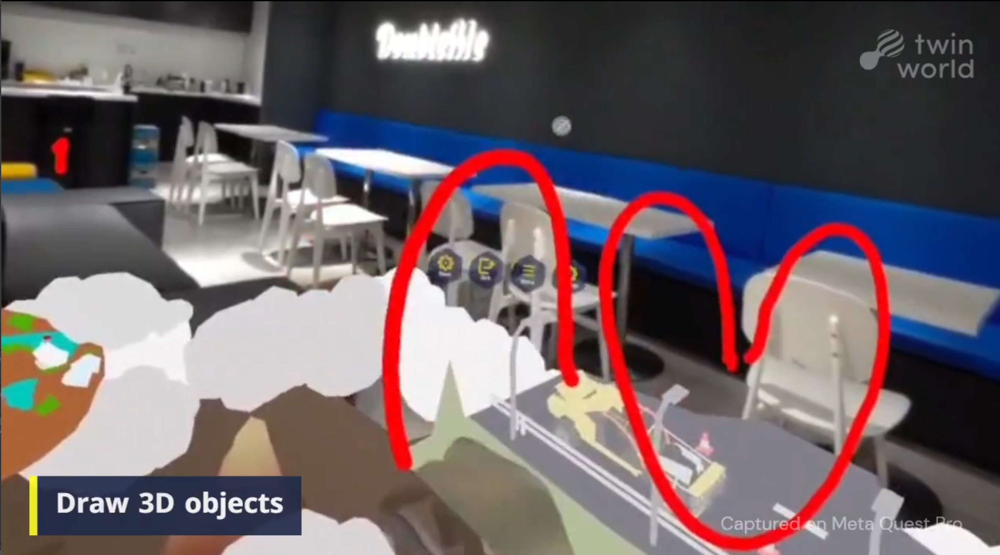
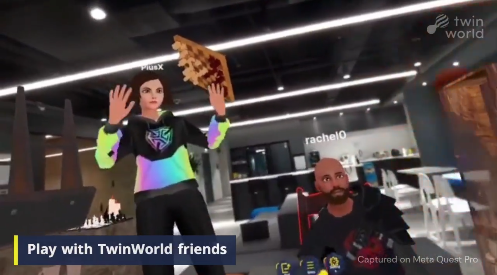
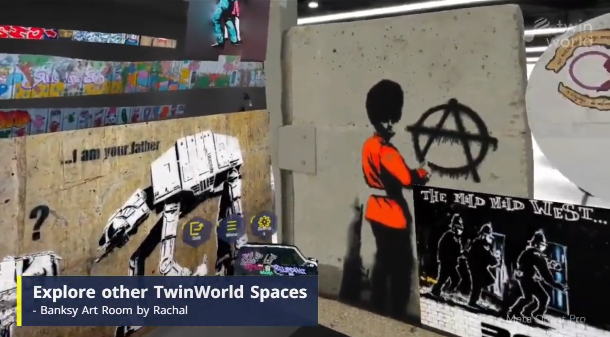
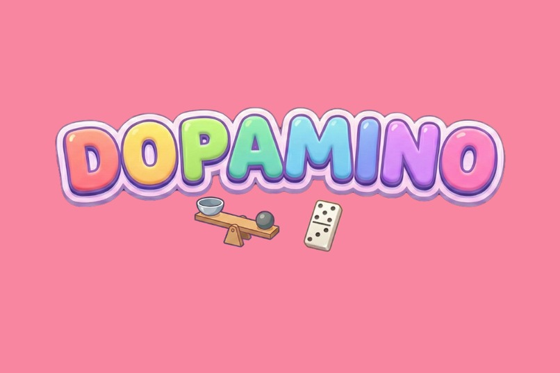
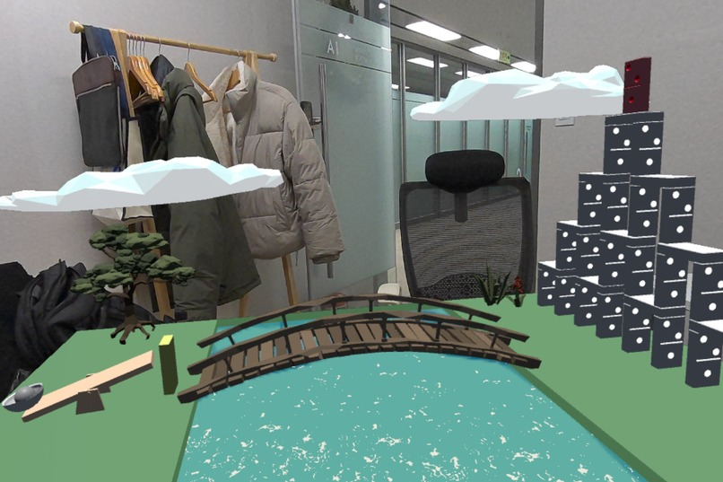
About
Unity · Game · XR
Unity 클라이언트 개발자로 VR/MR부터 메타버스 플랫폼까지 다양한 프로젝트를 경험했습니다. META·PICO·Hololens 멀티플랫폼 대응, 성능 최적화, 기획부터 출시·라이브 서비스까지 전 주기를 2회 완주했습니다.
새로운 기술과 분야에 대한 호기심이 많아 XR 외에도 컴퓨터 비전, AI, 시뮬레이션 등 다양한 연구와 학습을 즐깁니다. 만들고 싶은 것이 생기면 직접 부딪혀 보는 편입니다.
Career
스페이스아웃 게임즈
Unity 클라이언트 개발자
Dopamino
META XR SDK 기반 MR 도미노 게임
(주) 더블미 StudioX
Unity 클라이언트 개발자
Vivarium
XR 자연 생태계 체험 게임 — META Quest / PICO
(주) 더블미 TwinWorld
VR 클라이언트 개발자
Twinworld
XR 소셜 메타버스 플랫폼 — Microsoft Store / Meta Quest
Project